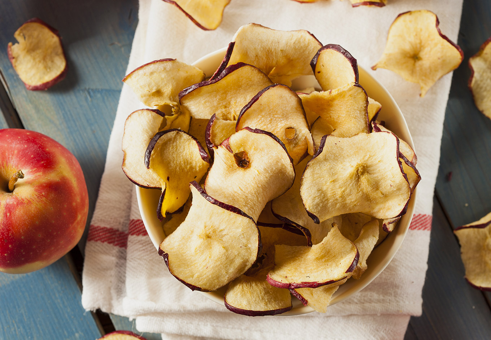

Chips de pomme.
 5h
5h- Difficulté :

- Technique(s) : Déshydratation
Ingrédients
- des pommes
- du jus de citron

Préparation
- Essuyer les pommes, (les laver et bien les essuyer si elles ne sont pas bio). Ne pas les peler,
- Les détailler à la mandoline en tranches de 5 mm d’épaisseurs,
- Puis les passer dans le jus de citron pour éviter qu’elles ne noircissent,
- Passer au déshydrateur à 60°C pendant 5h.